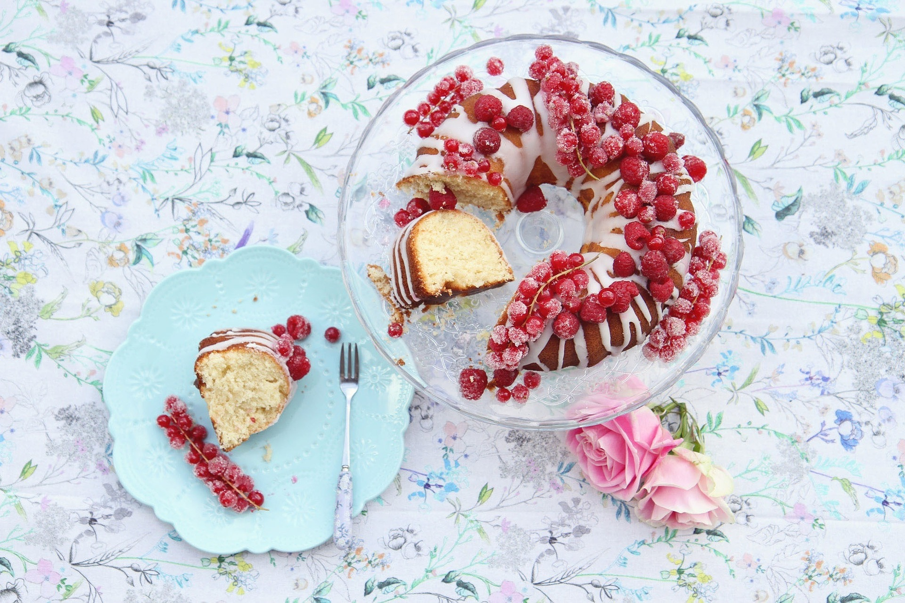

Ledene kocke

- 6 jaja
- 6 kašika brašna
- 6 kašika šećera
- 3 kašika kakaoa
- 1/2 praška za pecivo
- 1 l mleka
- 12 kašika šećera
- 13 kašika brašna
- 1 margarin
- 100 gr šećer u prahu
- 150-200 gr čokolada
Ovo je mera za pleh dimenzija 37 x 25 x 5. Umutiti 6 belanca sa šećerom, penasto u čvrst sneg, dodati 6 žumanca, sjediniti, pa dodati 6 kašika brašna, kakao i pola peciva. Peći na 220 C. Dok se patišpanj peče skuvati preliv za njega- 400 ml. vode i 14 kašika šećera. Kad počne da ključa smanjiti temperaturu, posle par minuta isključiti. Topao patišpanj preliti toplim šerbetom. Dok vam je rerna još vruća u posudu stavite sastojke za glazuru i ostavite. Fil: 12 kašika šećera pomešati sa 13 kašika brašna i malo mleka, pa zakuvati u preostalo mleko koje vri. Smanjiti temperaturu na minimum i mešati 5-10 minuta, dok se fil ne zgusne. Jedan margarin sjediniti sa 100 g šećera u prahu i jednim vanilin šećerom. Kada je fil potpuno ohlađen, dodavati margarin i mutiti dok se ne sjedini (preporučujem da se margarin dodaje uvek u hladan fil, tada je potpuno beo, penast i ne oseća se masnoća). Špatulom izravnati fil preko patišpanja. Glazuru izvadite iz rerne, snažno promešajte i nanesite preko fila.
Kolač od piškota

- 1 pakovanje piškota
- 1/2 litra mleka
- 2 jaja
- 125 gr margarina
- 8 kašika šećera
- 1 kašika brašna
- 2 kašike griza
- 1 kašika gustina
- 3 banane
- 2 kesice šlaga
- 2 dl sok od narandže
Od pola litre mleka odvojiti jednu šolju a ostatak staviti da se kuva sa 125 g margarina. Umutiti 2 žumanca sa 4 kašika šećera, 1 kašike brašna, 2 kašike griza i 1 kašike gustina. U ovo dodati onu odvojenu šolju mleka pa zakuvati u ostatak mleka kada provri. Posebno umutiti 2 belanca sa 4 kašika šećera u čvrst šam pa ga dodati u vruć, predhodno skuvan krem, i promešati varjačom da se što bolje sjedini. U kalup poređati red piškota natopljenih sokom. Preko poređanog keksa nasuti vruć fil i poravnati površinu. Sipati polako fil da se keks ne ispomera. Preko fila poređati iseckane banane i tako dok se ne potroši fil i banane. Držati nekoliko sati u frižideru da keks omekša i sve se dobro stegne. Ostaviti da se ohladi pa odgore staviti dve kesice šlaga i ukrasiti po želji.
Čokoloko
- 5 jaja
- 5 kašika šećera
- 5 kašika brašna
- 1 kesica prašak za pecivo
- 2 kašike kakaoa
- 200 gr šlag pene
- 200 ml mleka
- 200 gr mlevenog keksa
- 1 kisela pavlaka
- 100 gr Menaž čokolade
- 50 gr margarina
Belanca umutiti u čvrst sneg, dodati šećer, žumanca, brašno, prašak za pecivo i kakao. Pečenu koru preseći na pola, da se dobiju dve kore. Umutiti šlag penu sa mlekom prema uputstvu na kesici. Podeliti na dva dela, u jedan deo umešati pavlaku i keks. Drugi deo treba da ostane samo šlag. Jednu koru premazati polovinom rastopljene čokolade sa margarinom. Preko čokolade nafilovati filom od keksa, a preko njega šlag. Staviti drugu koru preko šlaga i ponoviti postupak.
Koh torta

- 6 jaja
- 8 kašika šećera
- 3 kašike brašna t-400
- 4 kašike griza
- 1 l mleka
- 1 kesica vanilin šećera
Odvojite žumanca od belanaca, umutite ih sa 6 kašika šećera, postepeno, kašiku po kašiku, dodajte brašno i griz i ako volite struganu koru od 1 limuna.
Izmešajte i dodajte čvrst sneg od belanaca. Pažljivo sve izmešajte i sipajte u podmazan i brašnom posut pleh.
Pecite na 220 stepeni dok koh ne porumeni i naraste. Smanjite temperaturu na 200 stepeni i dovršite pečenje.
Mleko ugrejte, zašećerite ga sa preostale 2 kašike šećera, dodajte vanilin šećer i njime prelijte koh.
Ostavite da koh upije veći deo tečnosti, pa secite i služite.
Oblanda

- 1 l mleka
- 500 gr šećera
- 1/2 margarina
- 1 oblanda
Staviti mleko da se kuva.Kada provri sipati mu šećer i mešati pola sata dok se ne zgusti. Zatim staviti pola margarina, promešati, sačekati 15-20 minuta da se prohladi, a onda filovati oblandu.